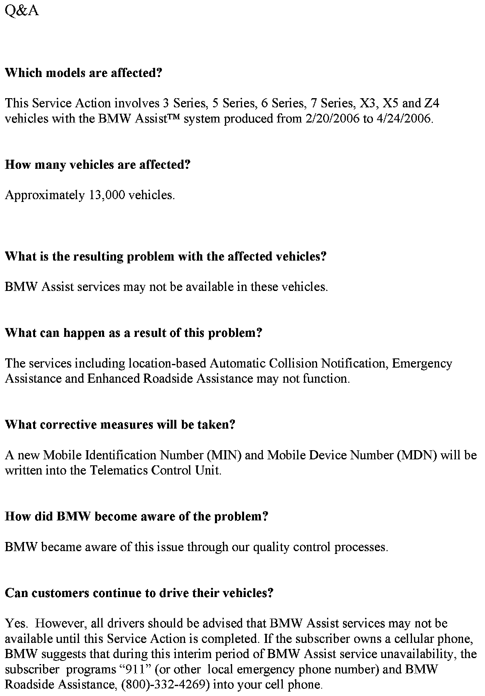
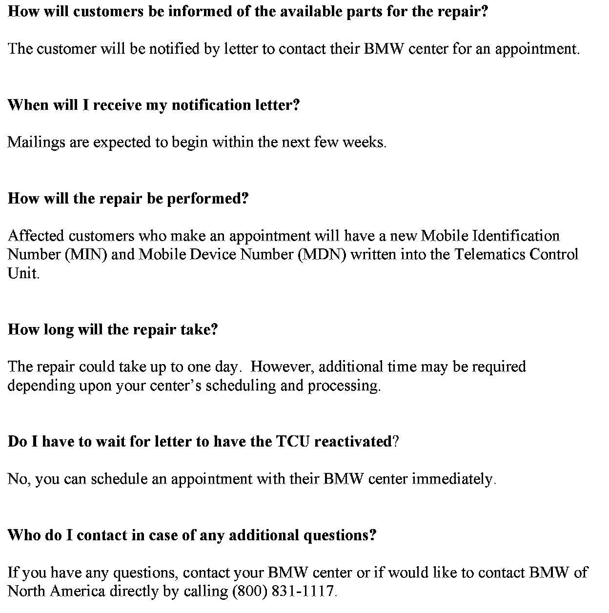

Operation CHARM
: Car repair manuals for everyone.
Home
>>
BMW
>>
2007
>>
X3 3.0si (E83) L6-3.0L (N52K)
>>
Repair and Diagnosis
>>
Relays and Modules
>>
Relays and Modules - Accessories and Optional Equipment
>>
Technical Service Bulletins
>>
By Symptom
>>
Recalls
>>
Campaign - Reactivation of Telematics Control Unit (TCU)
>>
Questions and Answers
Questions and Answers

